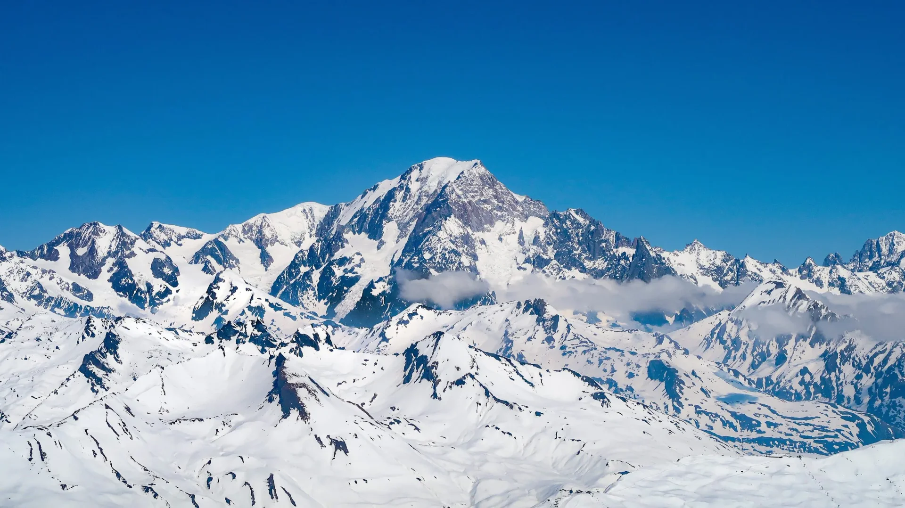
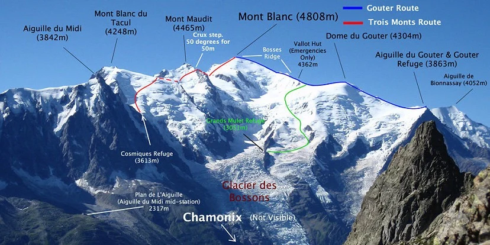

-Mont Blanc-
Magasság:
4808,7 m
Ország:
Franciaország, Olaszország
Hegység:
Alpok
Wikipedia

A Mont Blanc megmászásának három fő útvonala a Goûter-útvonal, a Trois Monts-útvonal és az Olasz normál útvonal.

1. A Goûter-útvonal (A normál útvonal)
Kiindulópont: Les Houches / Saint-Gervais, ahonnan a Mont Blanc fogaskerekű vasúttal (Tramway du Mont-Blanc) lehet feljutni a Nid d'Aigle megállóig (2372 m).Nehézség: Technikailag a legkevésbé nehéz, de fizikailag rendkívül megterhelő.Fő veszélyek: A hírhedt Grand Couloir (Kőomlás-folyosó) a Tête Rousse és a Goûter menedékházak között, ahol állandó a kőomlásveszély.Időtartam: Általában 3 nap (1. nap: felmenet a Tête Rousse vagy Goûter házig, 2. nap: csúcstámadás és visszatérés a házhoz, 3. nap: leereszkedés).Részletek: Ez a legnépszerűbb útvonal. A Goûter menedékháztól a Bosses-gerincen halad felfelé, érintve a Vallot-bivakházat a csúcs előtt.
2. A Trois Monts-útvonal (A három hegycsúcsos traverz)
Kiindulópont: Chamonix, ahonnan az Aiguille du Midi felvonóval (3842 m) lehet feljutni, a szállás pedig a Cosmiques menedékházban van.Nehézség: Technikailag nehezebb és meredekebb, mint a Goûter-útvonal.Fő veszélyek: Gleccserletörések (szerákok), lavinaveszély, valamint meredek jégfalak a Mont Blanc du Tacul és a Mont Maudit csúcsok keresztezése közben.Időtartam: A csúcstámadás napja körülbelül 13-14 órát vesz igénybe, amelynek nagy része 4000 méteres magasság felett zajlik.Részletek: Tapasztaltabb, jó kondícióban lévő alpinistáknak ajánlott, akik szeretnék elkerülni a normál útvonalon hömpölygő tömeget.
3. Olasz normál útvonal (Aiguilles Grises)
Kiindulópont: Val Vény (Courmayeur mellett), a Rifugio Gonella (Gonella menedékház) érintésével.Nehézség: Hosszú, kimerítő és elszigetelt.Fő veszélyek: A Miage-gleccser és a Dôme-gleccser hatalmas hasadékai, valamint a hatalmas szintkülönbség (több mint 3100 méter) miatti extrém fizikai fáradtság.Időtartam: A második napon egy nagyon hosszú, 13-14 órás menetelés vár a mászókra a csúcsig és vissza.Részletek: Egy sokkal vadregényesebb és csendesebb alternatíva, ahol lényegesen kevesebb hegymászóval találkozni, mint a francia oldalon.
Vissza
Dufourspitze